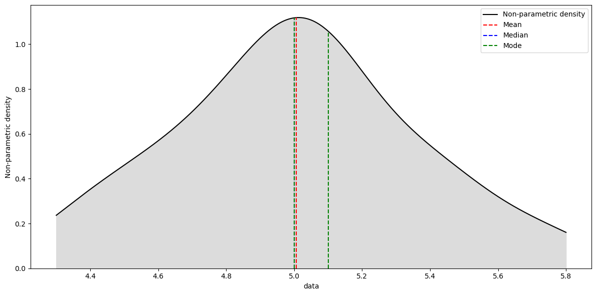
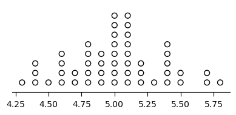

Make Plots#
- class cup_of_coffee.functions.plots.MakePlots(**kwargs)[source]#
This class instantiates an object to make plots with pre-defined layout.
Methods
draw_density_function(x_exp[, bw_method, ...])This function draws the non-parametric density plot with the central tendency measurements
draw_dot_plot(x_exp[, legend_label, ...])This function draws a dot plot with a predefined design
get_alfa()Gets the current
alphavalueget_language()Gets the current language
set_alfa(alfa)Changes the
alphavalueset_language(language)Changes the current language
- draw_density_function(x_exp, bw_method=None, which=None, legend_label=None, x_label=None, y_label=None, width='default', height='default', export=None, file_name=None, extension=None, dpi=None, tight=None, transparent=None, plot_design='default', legend=None, decimal_separator=None, local=None)[source]#
This function draws the non-parametric density plot with the central tendency measurements
- Parameters
- x_exp1D numpy array
The data to be fitted
- bw_method
str, optional The method used to calculate the estimator bandwidth. This can be
'scott'or'silverman'. IfNone(default), the scott method is used. This is thebw_methodfromscipy.stats.gaussian_kde(), but limited to'scott'or'silverman'options. For other options, use the original method [1].- which
str, optional - The parameter which controls which measures of central tendency should be added to the graph. The options are:
None(default): no measures of central tendency are included;'mean': adds the mean;'median': adds the median;'mode': adds the mode(s);'all': adds the mean, median and the mode(s);
To add two measures of central tendency, combine their names separated by a comma (
','). For example, to add the mean and median, usewhich = "mean,median".- legend_label
str, optional The label to be displayed on the legend. Default is
None, which results in"Non parametric density".- x_label
str, optional The label to be displayed on x label. Default is
None, which results in"data".- y_label
str, optional The label to be displayed on y label. Default is
None, which results in"Non-parametric density".- width
'auto','default',intorfloat(positive), optional The width of the figure. If it is
'auto', it tries to figure out a nice width for the plot using the data range. If it is'default', it uses a pre-defined value. If it is a number, it defines the width of the chart (in inches).- height
'auto','default',intorfloat(positive), optional The height of the figure. If it is
'auto', it tries to figure out a nice height for the plot using the data range. If it is'default', it uses a pre-defined value. If it is a number, it defines the height of the chart (in inches).- export
bool, optional Whether the graph should be exported (
True) or not (False). The default value isNone, which impliesFalse.- file_name
str, optional The file name. Default is
Nonewhich results in a file named"kernal_density".- extension
str, optional The file extension without a dot. Default is
Nonewhich results in a".png"file.- dpi
intorfloat, optional The figure pixel density. The default is
None, which results in a100 dpispicture. This parameter must be a number higher than zero.- tight
bool, optional Whether the graph should be tight (
True) or not (False). The default value isNone, which impliesTrue.- transparent
bool, optional Whether the background of the graph should be transparent (
True) or not (False). The default value isNone, which implies not transparent (white).- plot_design
strordict, optional The plot desing. If
'default', uses a simple desing (default). If'colored', uses a colored desing. Ifdict, it must have fivekeys("kde","Mean","Median","Mode","Area"), where each one defines the design of each element added to the chart.- The
valuesfor allkeysmust be alist. The lists of the keys"kde","Mean","Median", and"Mode"must have: the first element must be a
strwith the name of the color;the second element must be a
strwith the style of the line;the third element must be a number (
intorfloat) with the thickness of the line.
The
Arealist must have a single element, which is astrwith the name of the color that fills the area between the fit and the liney = 0.For example:
plot_design = { "kde": ['k', '-', 1.5], "Mean": ['dimgray', '--', 1.5], "Median": ['darkgray', '--', 1.5], "Mode": ['lightgray', '--', 1.5], "Area": ['white'], }
- The
- legend
bool, optional Whether the legend should be inserted into the chart (
True) or not (False). The default value isNone, which does not insert the legend into the plot (False).- decimal_separator
str, optional The decimal separator symbol used in the chart. It can be the dot (
Noneor'.') or the comma (',').- local
str, optional The alias for the desired locale. Only used if
decimal_separator = ','to set the matplolib’s defaultlocale. Its only function is to change the decimal separator symbol and should be changed only if the"pt_BR"option is not available.
- Returns
- kde_xnumpy array
The x values used to plot the graph
- kde_ynumpy array
The y values used to plot the graph
- central_tendency
dict A dictionary with the measures of central tendency of the data with respective value estimated by the kde function.
Notes
☕
To obtain which extensions the figure can be exported, use the following script:
>>> from matplotlib import pyplot as plt >>> suported_types = plt.gcf().canvas.get_supported_filetypes() >>> for key, value in suported_types.items(): print(key, ":", value) >>> plt.close()
The mode is calculated using the multimode function.
A list of color names can be found at matplotlib reference [2].
A list of linestyles can be found at reference [3].
References
- 1
https://docs.scipy.org/doc/scipy/reference/generated/scipy.stats.gaussian_kde.html
- 2
https://matplotlib.org/stable/_images/sphx_glr_named_colors_003.png
- 3
Examples
>>> from easy_stat.functions.plots import MakePlots >>> import numpy as np >>> x = np.array([5.1, 4.9, 4.7, 4.6, 5.0, 5.4, 4.6, 5.0, 4.4, 4.9, 5.4, 4.8, 4.8, 4.3, 5.8, 5.7, 5.4, 5.1, 5.7, 5.1, 5.4, 5.1,4.6, 5.1, 4.8, 5.0, 5.0, 5.2, 5.2, 4.7, 4.8, 5.4, 5.2, 5.5, 4.9, 5.0, 5.5, 4.9, 4.4, 5.1, 5.0, 4.5, 4.4, 5.0, 5.1,4.8, 5.1, 4.6, 5.3, 5.0 ]) >>> plots = MakePlots() >>> plots.draw_density_function(x, export=True, which="all", plot_design='colored')
- draw_dot_plot(x_exp, legend_label=None, x_label=None, width='auto', height='auto', export=None, file_name=None, extension=None, dpi=None, tight=None, transparent=None, n_ticks=None, legend=None, decimal_separator=None, local=None)[source]#
This function draws a dot plot with a predefined design
- Parameters
- x_exp1D numpy array
A 1 dimension numpy array with the dataset
- legend_label
str, optional The label to be displayed on the legend. Default is
None, which results in"data".- x_label
str, optional The label to be displayed on x label. Default is
None, which results in a blank label.- width
'auto','default',intorfloat(positive), optional The
widthof the figure. If it is'auto', it tries to figure out a nice width for the plot using the data range. If it is'default', it uses a pre-defined value. If it is a number, it defines the width of the chart (in inches).- height
'auto','default',intorfloat(positive), optional The
heightof the figure. If it is'auto', it tries to figure out a nice height for the plot using the data range. If it is'default', it uses a pre-defined value. If it is a number, it defines the height of the chart (in inches).- export
bool, optional Whether the graph should be exported (
True) or not (False). The default value isNone, which impliesFalse.- file_name
str, optional The file name. Default is
Nonewhich results in a file named"dot_plot".- extension
str, optional The file extension without a dot. Default is
Nonewhich results in a".png"file.- dpi
intorfloat, optional The figure pixel density. The default is
None, which results in a100 dpispicture. This parameter must be a number higher than zero.- n_ticks
int, optional The number of evenly spaced ticks to be drawn on the x-axis. The default is
None, which uses matplotlib default parameter.- tight
bool, optional Whether the graph should be tight (
True) or not (False). The default value isNone, which impliesTrue.- transparent
bool, optional Whether the background of the graph should be transparent (
True) or not (False). The default value isNone, which implies not transparent (white).- legend
bool, optional Whether the legend should be inserted into the chart (
True) or not (False). The default value isNone, which does not insert the legend into the plot (False).- decimal_separator
str, optional The decimal separator symbol used in the chart. It can be the dot (
Noneor'.') or the comma (',').- local
str, optional The alias for the desired locale. Only used if
decimal_separator=','to set the matplolib’s default locale. Its only function is to change the decimal separator symbol and should be changed only if the"pt_BR"option is not available.
- Returns
- xnumpy array
The x values used to plot the graph.
- ynumpy array
The y values used to plot the graph.
Notes
☕
To obtain which extensions the figure can be exported, use the following script:
>>> from matplotlib import pyplot as plt >>> suported_types = plt.gcf().canvas.get_supported_filetypes() >>> for key, value in suported_types.items(): print(key, ":", value) >>> plt.close()
References
- 1
Inspired by https://stackoverflow.com/a/64943404/17872198
Examples
>>> from easy_stat.functions.plots import MakePlots >>> import numpy as np >>> x = np.array([5.1, 4.9, 4.7, 4.6, 5.0, 5.4, 4.6, 5.0, 4.4, 4.9, 5.4, 4.8, 4.8, 4.3, 5.8, 5.7, 5.4, 5.1, 5.7, 5.1, 5.4, 5.1,4.6, 5.1, 4.8, 5.0, 5.0, 5.2, 5.2, 4.7, 4.8, 5.4, 5.2, 5.5, 4.9, 5.0, 5.5, 4.9, 4.4, 5.1, 5.0, 4.5, 4.4, 5.0, 5.1,4.8, 5.1, 4.6, 5.3, 5.0 ]) >>> plots = MakePlots() >>> plots.draw_dot_plot(x)
{kind=link}
{kind=link}